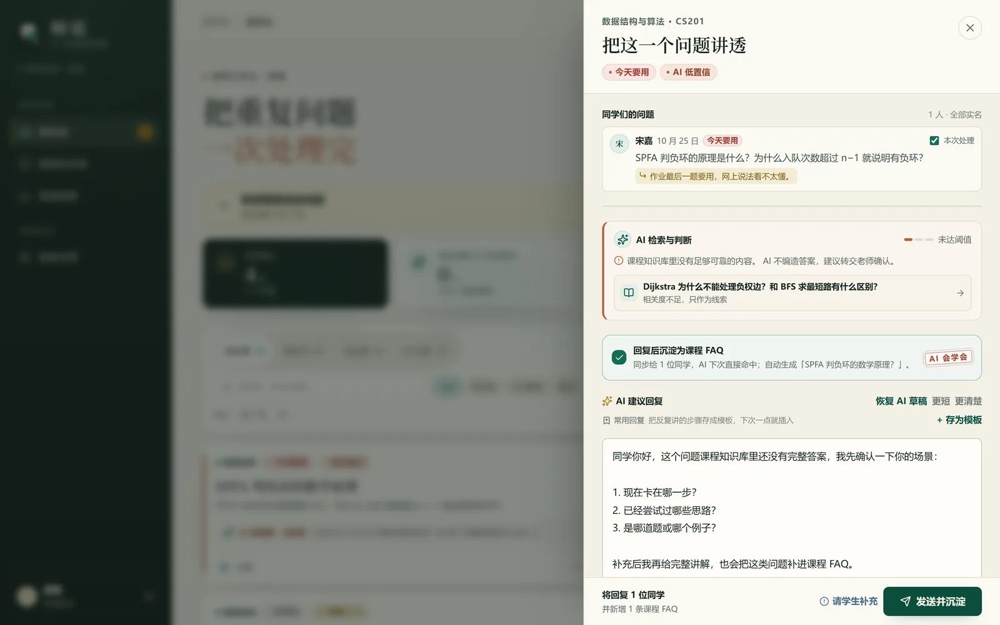
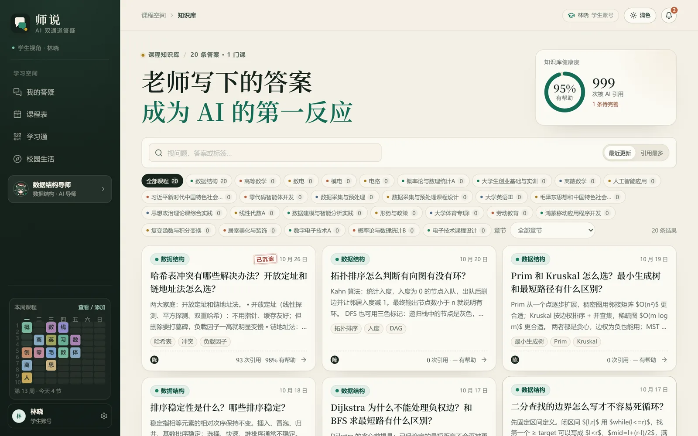
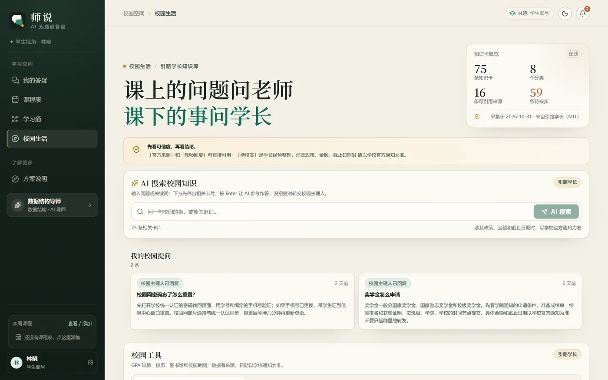
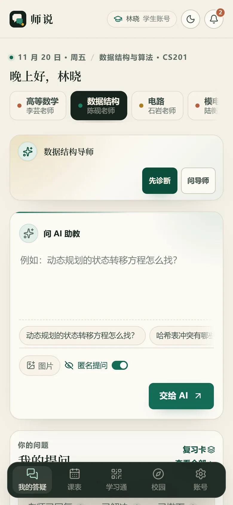

有依据，才开口
每条回答都带课程出处和高 / 中 / 低置信度。知识库里找不到可靠依据，就明确说不知道，把问题交给老师。
广应科首届黑客松 · 数字造梦师 · 软件应用赛道
答案标着出处，问题都有回音，一门课一年年攒下自己的知识库。AI 先把有依据的答掉，拿不准的交给任课老师；老师写下的每一句，成为 AI 的下一次第一反应。

01 双通道
AI 和老师不是二选一。先让 AI 把能答的答掉，再把拿不准的交给老师；老师答完，答案留下来。下一次，AI 直接命中。
选课程、贴题目图片，或者直接语音说。刚打几个字，页面就提示相近 FAQ 和正在等待的同题组。
先查课程知识库，每条回答都标出处和高 / 中 / 低置信度。证据不足就明确说不知道，不编一个像答案的东西。
题目、检索依据、学生追问一起转过去；同题自动合并成一组。老师打开待办，看到的是完整上下文，不是一句干问题。
AI 备好检索依据与回复草稿，老师改完一次发给整组；回复可以撤回，本次沉淀或更新的 FAQ 按快照回滚。
老师回复自动生成课程 FAQ。被连续反馈「还不够」的条目自动待完善、降低检索置信度；老师保存后计数清零。




数据来自当前演示环境 · npm run eval:retrieval 可复跑
02 能力
从一次提问开始，检索、判断、转交、回复、沉淀都在同一个闭环里。每多一位老师回复，AI 就多一条可以引用的依据。
每条回答都带课程出处和高 / 中 / 低置信度。知识库里找不到可靠依据，就明确说不知道，把问题交给老师。
三个同学问同一道题，老师只回一次，整组可见。
待办自动合并，AI 备好检索依据与回复草稿；回复可撤回，FAQ 回滚到快照。
老师每次回复自动沉淀为 FAQ。被连续反馈「还不够」的，自动标记待完善。

32 位导师，带着课程地图、卡点诊断和先修检查来答疑。
校园知识库收录 75 条经验卡：空教室、校历、图书馆、食堂决策，还有教务课表与学习通同步。和课程答疑分开治理，来源可追溯。

03 宣传片
从下课后的三个问题，到老师回复被沉淀成 FAQ。画面全部来自实际运行的演示账号，旁白与音乐为本地生成。

04 手机端
手机浏览器直接可用；Android 安装包已开放下载，iPhone 版仍在筹备。装成 App 之后，课表上桌面、通知进状态栏、学习通一键直达。
与 Web 版同一套账号与课程数据
装成 App 之后，多出来的四件事
4×2 桌面小组件按教学周算好今天：正在上的那节写着「上课中」，今天课上完自动翻到明天。点任意一行，直达完整周课表。
App 退到后台也能收到提醒：老师回复了你的问题、问题被确认解决。走系统通知，不依赖 Google 服务，国产 ROM 下同样可用。
消息、作业、资料还在学习通里。师说里点一下直接打开学习通 App；反过来，从学习通分享题目图片，也能直接落进提问框。
四个桌面快捷方式：拍题提问、我的课表、学习通、今天吃什么。相机和相册授权一次，选张原图就能问。
以上能力来自 Android 安装包；iPhone 版仍在筹备。
05 为什么叫师说
师者 所以传道受业解惑也韩愈《师说》
「师说」想做的不是替老师回答，而是让老师的回答被留下。
AI 负责即时，老师负责准确；一次精答，喂给下一次提问。